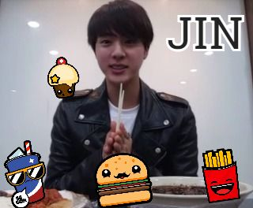

Un poco de informacion:
Nombre Artistico: Jung KooK
Nombre Real: Jeon Jung KooK
Nacio el 1 de septiembre de 1997 en Busan Corea del Sur es vocalista, rapero, bailarín, modelo y maknae.Su familia está formada por sus padres y hermano mayor.Sus hobbies son dibujar, bailar e ir en skate.Su modelo a seguir es G-Dragon y su lema de vida es "Preferiría morir a vivir sin ninguna pasión".Lo apodan Golden Maknae, maknae de oro porque puede bailar, cantar y rapear muy bien. Suspendió sus estudios durante 2013 por las promociones con BTS, pero los ha retomó en el 2014. Le gusta mucho Dynamic Duo.Le gusta imitar a grupos de chicas por lo que le salen muy bien las coreografias femeninas.
Personalmente tengo algo de tiempo de escuchar y seguir a este miembro del grupo BTS y podria decir que tiene una voz muy hermosa, es muy carismatico y me gusta cuando sonrie pero me encanta mas por su voz y por su forma de vailar. Tambien el artista siempre se esfuerza en que sus pasos de vaile salgan bien
Acontinuacion un cover de la cacion Working (일하는중) cantada por Jung KooK
TaeHyung 김태형
Informacion sobre Taehyung:
Nombre artistico: V
Nombre real: Kim TaeHyung
Nacio el 30 de diciembre de 1995 en Daegu-Kojang Seoul Corea del Sur. Vocalista, bailarín, modelo y actor. Su familia está formada por sus padres y hermanos menores. Habla coreano y japonés.Lo apodan TaeTae, 4D y "alien" por su personalidad muy bromista y su gusto por hacer cosas raras o poco comunes. Tiende a morderse las uñas, quedarse con la boca abierta y tocarlo todo Su sonrisa rectangular y carismática hace sonreír a cualquiera. Tiene un parecido con Baekhyun integrante del grupo Exo y tambien con el integrante de B.A.P Daehyun. Su sonrisa rectangular y carismática hace sonreír a cualquiera es un ex-ulzzang y se unió a BigHit en 2011. es muy cercano a Jimin y a Jung KooK
Para mi cuando recien conoci al grupo coreano la primera persona que me llamo la atencion fue V porque es una persona sonriente en ocaciones, sexy muy sexy y su tono de voz es lindo, cuando el canta su tono de voz es lindo al escuchar. A mi me encanta oir lo, ademas cuando es tierno es como para decir aww. Y cuando baila a veces saca su lengua por unos segundos.
Hug Me 안아줘 performed by V,J-Hope
Ji Min 지민
Informacion sobre JiMin
Nombre artistico: Jimin
Nombre Real: Park JiMin
Nacio el 13 de octubre de 1995 en Busan Corea del Sur. Es vocalista, bailarín, y modelo. Su familia se compone por sus padres y hermano menor
sus hobbies son dibujar, las artes marciales y el baile. Le apodan Park Jiminnie o Dooly. Sus modelos a seguir son Taeyang de Big Bang, Minwoo de Shinhwa y Se7en pero entre ellos destaca el primero. Es el que más habla del grupo, y le gusta bromear con los demás miembros.
Es muy carismatico y es uno en un millon por que como el no exite mas la linda sonrisa que el pose y la hermosa voz que tiene hace que mi dia sea mucho mejor y mas lindo cada vez que lo escucho. En verdad es 100000000000000000000% recomendable oirlo
BTS Try Not To Fangirl/Fanboy Challenge: Jimin Version
Jin 진

Informacion del Artista
Nombre artistico: Jin
Nombre Real: Kim SeokJin
Nacio el 4 de diciembre de 1992 Anyang-Gwangcheon Corea del Sur es vocalista, bailarín visual y modelo habla dos idiomas: Coreano y mandarin pero solo lo basico su familia está formada por sus padres y su hermano mayor Adora cocinar y es el mejor en ello del grupo su modelo a seguir es T.O.P de Big Bang. Le pusieron de apodo pink princess o princess Jin porque su color favorito es el rosa. Puede caminar como la niña del exorcista. Hizo un cover de Ra.D "Mom" por el Día de los Padres (8 de mayo), que lo publicó en su blog y en Sound Clound.
Es muy carismatico adoro cuando realiza un Eat Jin live y lo que el decia era Cada vez que esten comiendo algo comanlo con gusto y tambien coman a grandes bocaradas de comida por que asi se disfruta mejor la comida
Cover Mom por Jin
Rap Monster 랩몬스터
Infomacion del Artista
Nombre artistico: Rap Monster
Nonbre Real: Kim NamJoon
Nacio el 12 de septiembre de 1994 en Ilsan-Seúl Corea del Sur líder, rapero, bailarín y modelo lo apodaron "RapMon" y "dios de la destrucción" por que todo lo que toca se rompe literalmente. Habla coreano y ingles fluido su familia está formada por sus padres y hermana menor antes de debutar el era rapero underground. Vivió tres años en Nueva Zelanda le encanta navegar por internet, escuchar música, componer, jugar al baloncesto y al fútbol. Sus modelos a seguir son Kanye West y A$AP Rocky. Su relación con el rap comenzó en 2007 en el 2010 se unió a BigHit y produjo más de 100 canciones él solo tambien trabajó en canciones con Zico de Block B previamente, cuando era conocido como Runch Randa y Zico como Nacseo. Fue escogido líder por ser el primer miembro del grupo y lo más importante, tener vocación para ello.
Es muy carismatico su voz es dulce su rap es realmente hermoso hay muchas cosas por la cual uno podria seguirlo
Rap Monster Do You
J-Hope 제이홉
Infomacion del Artista
Nombre artistico: J-Hope
Nombre Real: Jung HoSeok
Nacio el 18 de febrero de 1994 Kwangju Corea del Sur rapero, bailarín y modelo el tiene una personalidad alegre, bromista y carismática, su nombre caracteristico proviene de su deseo de apoyar a los demas Hope=Esperanza en ingles. Sus modelos a seguir son A$AP Rocky, J.Cole, Beenzino y G-Dragon. Antes de debutar colaboró con Jokwon en la parte del rap de su canción "Animal" además de aparecer en su MV "I'm da one". Le gusta hacer bromas para mantener un buen ambiente en el grupo.
Es muy carismatico ademas siempre se esfuerza en mejorar su baile su sonrisa contagia a que uno sonria, tambien tiene una dulce voz
Suga 슈가
Informacion del artista
Nombre Artista: Suga
nombre Real: MinYoonGi
Nacio el 9 de marzo de 1993 Daegu Corea del Sur rapero, bailarín y modelo su familia está formada por sus padres y su hermano mayor Tiende a dormir siempre que tiene tiempo y no es muy activo fuera del escenario, por lo cual ha recibido el apodo de "Min inmóvil" Sus modelos a seguir son Kanye West, Lupe Fiasco, Lil Wayne y Hit Boy. Suele hacer rimas, bromas, escribir letras y hablar en satoori (acento de busan) cuando está nervioso Antes del debut era un rapero underground, igual que Rap Monster pero con la diferencia de que el no es bueno en el ingles Su sueño de ser rapero inició en 2006 cuando iba a 6.º grado de secundaria, mientras escuchaba "Fly" de Epik High, momento en el que dijo "sí, yo también haré rap"; desde entonces es su canción de curación.